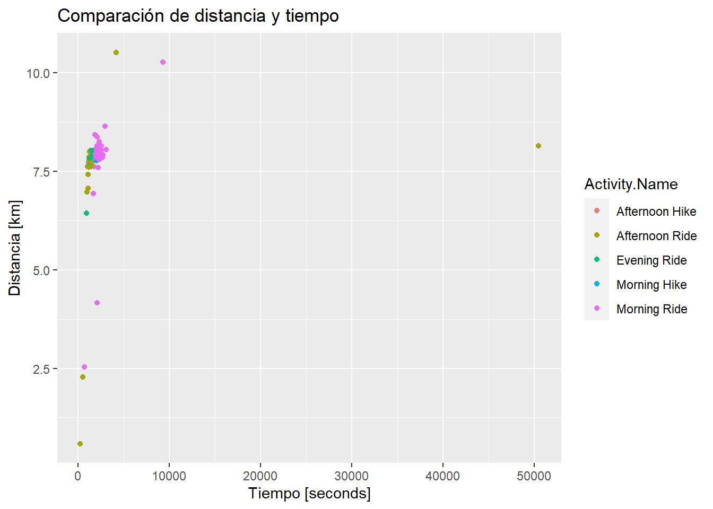
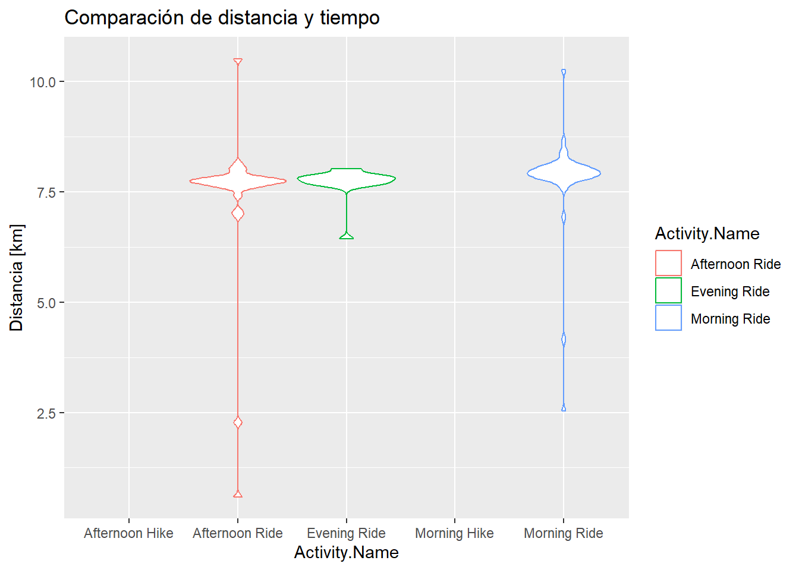
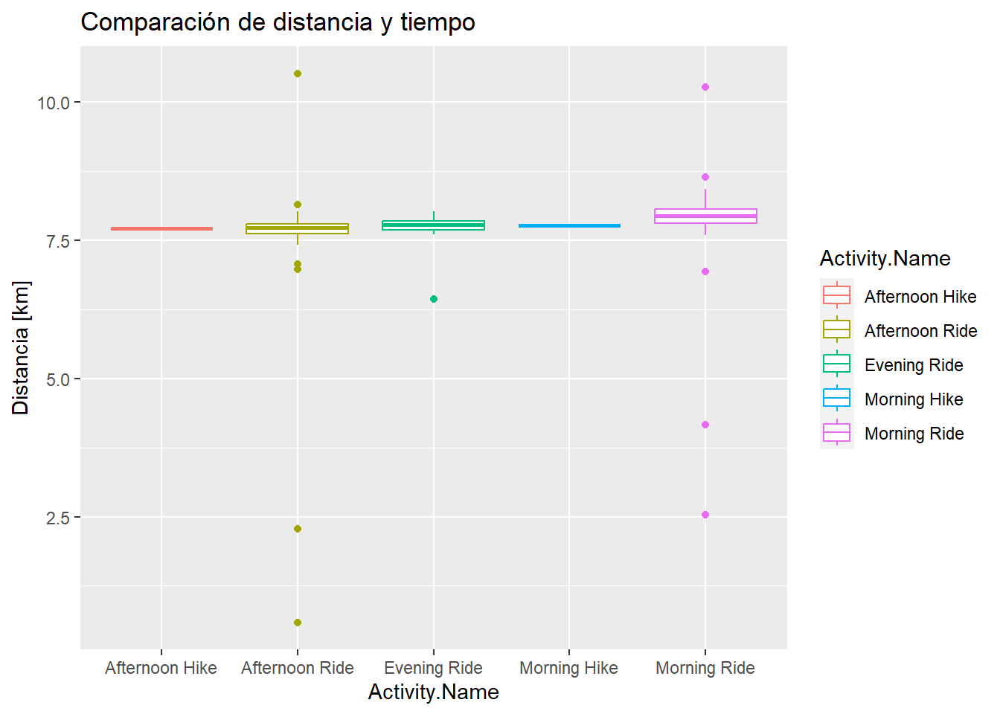

#install.packages(c("tidyverse", "rmarkdown", "nasapower", "zoo", "caret"))Introducción a R, Data Mining & Business Intelligence
Bienvenidos
Esto es un notebook. Podemos escribir en lenguaje Markdown, el cual nos permite: * Listas * Escribir en negrita y cursiva * Más información aquí: Markdown-Cheatsheet
PREGUNTAD!!
Sobretodo si os perdeis, no lleguemos a casos donde no sepais que estamos haciendo.

Business Intelligence
El término Business Intelligence (BI) aprovecha el software y los servicios para transformar los datos en información procesable que informe las decisiones comerciales estratégicas y tácticas de una organización. Las herramientas de BI acceden y analizan conjuntos de datos y presentan hallazgos analíticos en informes, resúmenes, tableros, gráficos, tablas y mapas para proporcionar a los usuarios inteligencia detallada sobre el estado del negocio.
El término Business Intelligence a menudo también se refiere a una variedad de herramientas que brindan acceso rápido y fácil de digerir a información sobre el estado actual de una organización, según los datos disponibles.
Herramientas BI
De pago:
- PowerBI: https://powerbi.microsoft.com/en-au/
- Tableau: https://www.tableau.com/
- Qlickview: https://www.qlik.com/
Gratuitas:
- Metabase: https://www.metabase.com/
- Apache Superset: https://superset.apache.org/
Lenguaje estadístico R
R es un entorno y lenguaje de programación con un enfoque al análisis estadístico.
Es gratuito, se distribuye bajo licencia GPL y está disponible aquí: https://www.r-project.org/
Bibliografía
Sobre R: R for Data Science: Import, Tidy, Transform, Visualize, and Model Data Este libro es bastante completo, abarca mucho temario que no veremos por falta de tiempo.
¿Que podemos hacer con R?
Trabajar con tablas
Podemos guardar el contenido de una hoja de calculo Excel o un fichero CSV en un objeto llamado dataframe.
activities<-read.csv('data/activities_strava.csv', stringsAsFactor=T)Podemos ver las primeras filas de su contenido:
head(activities) Activity.ID Activity.Date Activity.Name Activity.Type
1 2583296920 Aug 1, 2019, 3:51:15 PM Afternoon Ride Ride
2 2583296929 Aug 2, 2019, 5:53:50 AM Morning Ride Ride
3 2584111125 Aug 2, 2019, 1:15:49 PM Afternoon Ride Ride
4 2613027582 Aug 12, 2019, 3:58:59 PM Afternoon Ride Ride
5 2631611632 Aug 19, 2019, 5:24:35 AM Morning Ride Ride
6 2632473031 Aug 19, 2019, 1:29:48 PM Afternoon Ride Ride
Activity.Description Elapsed.Time Distance Relative.Effort Commute
1 NA 50436 8.14 NA false
2 NA 1745 7.96 NA false
3 NA 944 6.97 NA false
4 NA 4170 10.52 NA false
5 NA 1744 7.62 NA true
6 NA 1046 7.62 NA true
Activity.Gear Filename Athlete.Weight Bike.Weight
1 NA activities/2583296920.gpx 0 NA
2 NA activities/2583296929.gpx 0 NA
3 NA activities/2584111125.gpx 0 NA
4 NA activities/2613027582.gpx 0 NA
5 NA activities/2631611632.gpx 0 NA
6 NA activities/2632473031.gpx 0 NA
Elapsed.Time.1 Moving.Time Distance.1 Max.Speed Average.Speed Elevation.Gain
1 50436 38641 8143.7 14.2 NA 29.82933
2 1745 1682 7960.3 13.8 NA 128.79434
3 944 944 6969.6 14.9 NA 17.21061
4 4170 3003 10528.8 11.8 NA 62.29892
5 1744 1611 7628.7 12.0 NA 128.79936
6 1046 1038 7620.3 13.9 NA 30.42585
Elevation.Loss Elevation.Low Elevation.High Max.Grade Average.Grade
1 NA 605.7 704.5 21.7 -1.03392804
2 NA 584.3 704.5 13.0 1.18462873
3 NA 584.3 704.5 10.5 -1.59837008
4 NA 765.5 794.6 7.2 -0.02944305
5 NA 584.3 704.5 12.9 1.33181274
6 NA 584.3 704.5 10.1 -1.30965972
Average.Positive.Grade Average.Negative.Grade Max.Cadence Average.Cadence
1 NA NA NA NA
2 NA NA NA NA
3 NA NA NA NA
4 NA NA NA NA
5 NA NA NA NA
6 NA NA NA NA
Max.Heart.Rate Average.Heart.Rate Max.Watts Average.Watts Calories
1 NA NA NA NA NA
2 NA NA NA NA NA
3 NA NA NA NA NA
4 NA NA NA NA NA
5 NA NA NA NA NA
6 NA NA NA NA NA
Max.Temperature Average.Temperature Relative.Effort.1 Total.Work
1 NA NA NA NA
2 NA NA NA NA
3 NA NA NA NA
4 NA NA NA NA
5 NA NA NA NA
6 NA NA NA NA
Number.of.Runs Uphill.Time Downhill.Time Other.Time Perceived.Exertion
1 NA NA NA NA NA
2 NA NA NA NA NA
3 NA NA NA NA NA
4 NA NA NA NA NA
5 NA NA NA NA NA
6 NA NA NA NA NA
translation.missing..en.US.lib.export.portability_exporter.activities.horton_values.type
1 NA
2 NA
3 NA
4 NA
5 NA
6 NA
translation.missing..en.US.lib.export.portability_exporter.activities.horton_values.start_time
1 NA
2 NA
3 NA
4 NA
5 NA
6 NA
Weighted.Average.Power Power.Count Prefer.Perceived.Exertion
1 NA NA NA
2 NA NA NA
3 NA NA NA
4 NA NA NA
5 NA NA NA
6 NA NA NA
Perceived.Relative.Effort Commute.1 Total.Weight.Lifted From.Upload
1 NA NA NA NA
2 NA NA NA NA
3 NA NA NA NA
4 NA NA NA NA
5 NA NA NA NA
6 NA NA NA NA
Grade.Adjusted.Distance Weather.Observation.Time Weather.Condition
1 NA NA NA
2 NA NA NA
3 NA NA NA
4 NA NA NA
5 NA NA NA
6 NA NA NA
Weather.Temperature Apparent.Temperature Dewpoint Humidity Weather.Pressure
1 NA NA NA NA NA
2 NA NA NA NA NA
3 NA NA NA NA NA
4 NA NA NA NA NA
5 NA NA NA NA NA
6 NA NA NA NA NA
Wind.Speed Wind.Gust Wind.Bearing Precipitation.Intensity Sunrise.Time
1 NA NA NA NA NA
2 NA NA NA NA NA
3 NA NA NA NA NA
4 NA NA NA NA NA
5 NA NA NA NA NA
6 NA NA NA NA NA
Sunset.Time Moon.Phase Bike Gear Precipitation.Probability Precipitation.Type
1 NA NA NA NA NA NA
2 NA NA NA NA NA NA
3 NA NA NA NA NA NA
4 NA NA NA NA NA NA
5 NA NA NA NA NA NA
6 NA NA NA NA NA NA
Cloud.Cover Weather.Visibility UV.Index Weather.Ozone
1 NA NA NA NA
2 NA NA NA NA
3 NA NA NA NA
4 NA NA NA NA
5 NA NA NA NA
6 NA NA NA NA
translation.missing..en.US.lib.export.portability_exporter.activities.horton_values.jump_count
1 NA
2 NA
3 NA
4 NA
5 NA
6 NA
translation.missing..en.US.lib.export.portability_exporter.activities.horton_values.total_grit
1 NA
2 NA
3 NA
4 NA
5 NA
6 NA
translation.missing..en.US.lib.export.portability_exporter.activities.horton_values.avg_flow
1 NA
2 NA
3 NA
4 NA
5 NA
6 NAPodemos quedarnos con las columnas que nos interesan:
colnames(activities) [1] "Activity.ID"
[2] "Activity.Date"
[3] "Activity.Name"
[4] "Activity.Type"
[5] "Activity.Description"
[6] "Elapsed.Time"
[7] "Distance"
[8] "Relative.Effort"
[9] "Commute"
[10] "Activity.Gear"
[11] "Filename"
[12] "Athlete.Weight"
[13] "Bike.Weight"
[14] "Elapsed.Time.1"
[15] "Moving.Time"
[16] "Distance.1"
[17] "Max.Speed"
[18] "Average.Speed"
[19] "Elevation.Gain"
[20] "Elevation.Loss"
[21] "Elevation.Low"
[22] "Elevation.High"
[23] "Max.Grade"
[24] "Average.Grade"
[25] "Average.Positive.Grade"
[26] "Average.Negative.Grade"
[27] "Max.Cadence"
[28] "Average.Cadence"
[29] "Max.Heart.Rate"
[30] "Average.Heart.Rate"
[31] "Max.Watts"
[32] "Average.Watts"
[33] "Calories"
[34] "Max.Temperature"
[35] "Average.Temperature"
[36] "Relative.Effort.1"
[37] "Total.Work"
[38] "Number.of.Runs"
[39] "Uphill.Time"
[40] "Downhill.Time"
[41] "Other.Time"
[42] "Perceived.Exertion"
[43] "translation.missing..en.US.lib.export.portability_exporter.activities.horton_values.type"
[44] "translation.missing..en.US.lib.export.portability_exporter.activities.horton_values.start_time"
[45] "Weighted.Average.Power"
[46] "Power.Count"
[47] "Prefer.Perceived.Exertion"
[48] "Perceived.Relative.Effort"
[49] "Commute.1"
[50] "Total.Weight.Lifted"
[51] "From.Upload"
[52] "Grade.Adjusted.Distance"
[53] "Weather.Observation.Time"
[54] "Weather.Condition"
[55] "Weather.Temperature"
[56] "Apparent.Temperature"
[57] "Dewpoint"
[58] "Humidity"
[59] "Weather.Pressure"
[60] "Wind.Speed"
[61] "Wind.Gust"
[62] "Wind.Bearing"
[63] "Precipitation.Intensity"
[64] "Sunrise.Time"
[65] "Sunset.Time"
[66] "Moon.Phase"
[67] "Bike"
[68] "Gear"
[69] "Precipitation.Probability"
[70] "Precipitation.Type"
[71] "Cloud.Cover"
[72] "Weather.Visibility"
[73] "UV.Index"
[74] "Weather.Ozone"
[75] "translation.missing..en.US.lib.export.portability_exporter.activities.horton_values.jump_count"
[76] "translation.missing..en.US.lib.export.portability_exporter.activities.horton_values.total_grit"
[77] "translation.missing..en.US.lib.export.portability_exporter.activities.horton_values.avg_flow" activities <- activities[,c('Activity.Name', 'Activity.Type', 'Elapsed.Time', 'Distance')]
head(activities) Activity.Name Activity.Type Elapsed.Time Distance
1 Afternoon Ride Ride 50436 8.14
2 Morning Ride Ride 1745 7.96
3 Afternoon Ride Ride 944 6.97
4 Afternoon Ride Ride 4170 10.52
5 Morning Ride Ride 1744 7.62
6 Afternoon Ride Ride 1046 7.62Podemos obtener un resumen del dataframe
summary(activities) Activity.Name Activity.Type Elapsed.Time Distance
Morning Ride :45 Hike: 1 Min. : 197 Min. : 0.590
Afternoon Ride:28 Ride:92 1st Qu.: 1230 1st Qu.: 7.715
Evening Ride :17 Run : 1 Median : 1745 Median : 7.820
Afternoon Hike: 1 Walk: 1 Mean : 2627 Mean : 7.698
Lunch Hike : 1 3rd Qu.: 2095 3rd Qu.: 8.000
Morning Hike : 1 Max. :50436 Max. :15.200
(Other) : 2 Podemos filtrar y quedarnos solo los de una activity
activities_ride <- activities[activities$Activity.Type=='Ride',]Podemos calcular la media de una columna
tiempo_medio_actividades <- mean(activities_ride$Elapsed.Time)
paste("El tiempo medio de todas las actividades es:", tiempo_medio_actividades, "segundos")[1] "El tiempo medio de todas las actividades es: 2295.61956521739 segundos"paste("El tiempo medio de todas las actividades es:", round(tiempo_medio_actividades/60,3), "minutos")[1] "El tiempo medio de todas las actividades es: 38.26 minutos"paste("El tiempo medio de todas las actividades es:", round(tiempo_medio_actividades/60), "minutos y ",
round(tiempo_medio_actividades %% 60,1),"segundos")[1] "El tiempo medio de todas las actividades es: 38 minutos y 15.6 segundos"Podemos pintar La relación entre el tiempo y la distancia:
options(repr.plot.height=4,repr.plot.width=8, repr.plot.res = 200)
library(ggplot2)
ggplot(activities_ride, aes(x=Elapsed.Time, y=Distance, color=Activity.Name))+geom_point()+
xlab("Tiempo [seconds]")+ylab("Distancia [km]")+ggtitle("Comparación de distancia y tiempo")
Podemos crear diferentes tipos de gráficos sobre la distancia:
ggplot(activities_ride, aes(x=Activity.Name, y=Distance, color=Activity.Name))+geom_violin()+
ylab("Distancia [km]")+ggtitle("Comparación de distancia y tiempo")Warning: Groups with fewer than two data points have been dropped.
Groups with fewer than two data points have been dropped.
ggplot(activities_ride, aes(x=Activity.Name, y=Distance, color=Activity.Name))+geom_boxplot()+
ylab("Distancia [km]")+ggtitle("Comparación de distancia y tiempo")